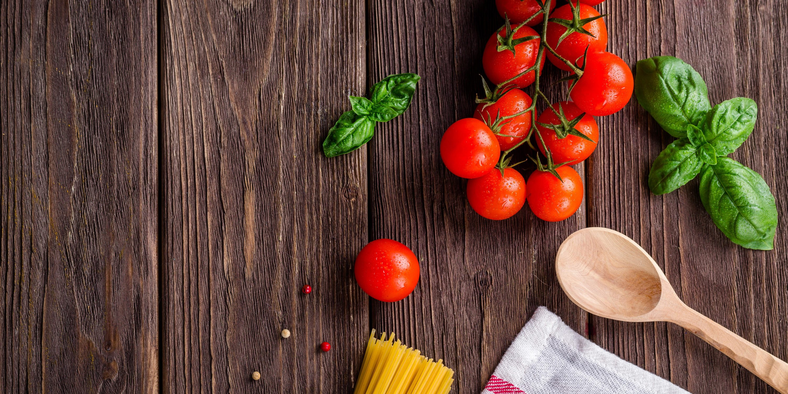
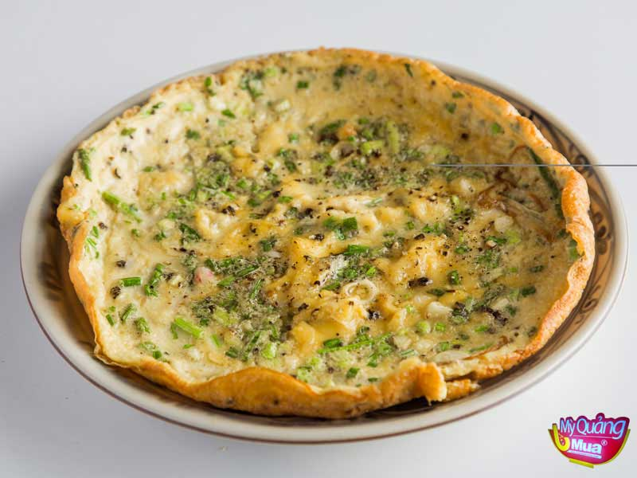
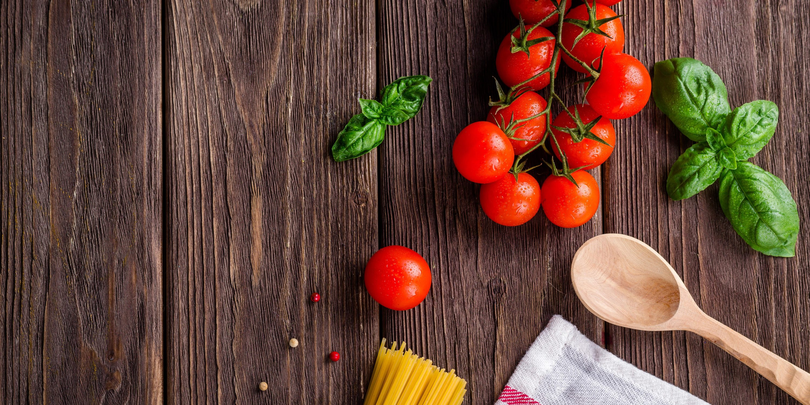
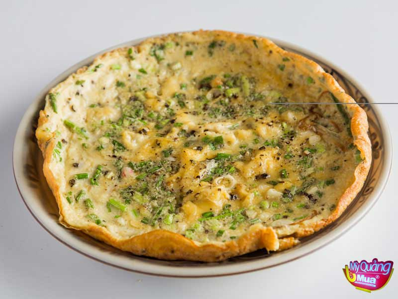

B1:Sơ chế cà rốt và khoai tây sạch vỏ, cắt thành hạt lựu Cho trứng vào tô, tiếp tục cho cà rốt, khoai tây, đậu hà lan, ít nước mắm và tiêu vào đánh đều. Sau đó, cho trứng vào chiên và đợi hỗn hợp chín thì tắt bếp.
lưa ý :Rau củ mọi người cần cắt mỏng và nhỏ để trứng và rau củ cùng chín một lúc. Cần để ráo rau củ quả để món trứng được khô ráo, không bị bở.
 


